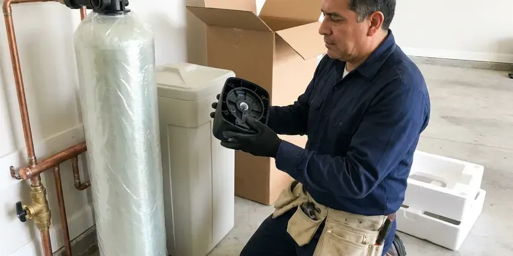
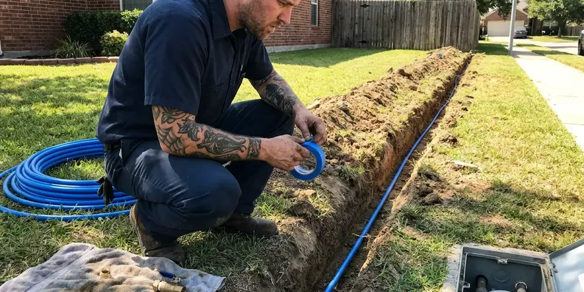

Gas Line Installation in Milford, DE
Safe, permitted gas line installation in Milford, DE using black iron, CSST and buried polyethylene, with every joint leak tested.
- CSST Bonded to Code
- Every Joint Pressure Tested
- Leak Tested Every Time
- Written Prices Up Front

Licensed Gas Line Installation in Milford, DE
Call for a free estimate on your gas line project.
Gas Line Installation in Milford, DE
A gas line has one job and no margin for error. Route, pipe size and permit all get settled before any pipe gets cut, then trench where needed and connect at the meter and the appliance for a reliable supply to your Milford property. Every joint is leak tested.
Some of what we do:
- Gas piping sized and routed for outdoor kitchens
- Black iron, CSST and buried polyethylene piping
- Pool heater and generator supply lines

Additional Plumbing Installation Services in Milford, DE
We install water heaters, pumps, lines, and fixtures across Milford, DE with precision workmanship that meets every local code.




Water Softener Installation near Milford


Milford water line installation specialists


Customers
Why Choose GNV Plumbing for Gas Line Installation in Milford, DE?
Safe gas service starts with knowing how the whole system behaves. The meter, the main and every connected appliance get reviewed, because adding a tankless heater to a house already near its limit can starve the furnace on the coldest morning of the year. We check meter capacity.
- Experienced Plumbers, Licensed plumbers who run gas lines every week.
- Leak Tested, We pressure test and check every joint before opening the gas.
- Sized Correctly, BTU demand and pipe length decide the size, so appliances hit full output.
Citywide Coverage
Our local knowledge covers the whole Milford area. We know how the city handles gas permits, how long inspections take to schedule, and which utility contacts handle meter upgrades, so the project finishes on time instead of stalling on paperwork. Paperwork delays are avoidable.
Experienced Team
Sizing, routing and testing are all handled by our licensed team. Each step gets done with the same care, from reading the meter capacity to holding the pressure test on a gauge for the full time code requires before anyone lights a burner in Milford. The gauge has to hold steady.
Safety-First Approach
After flooding, wells should be tested and septic systems checked before normal use, since floodwater can contaminate both. CSST has to be electrically bonded to reduce lightning damage risk. We bond every CSST system with the clamp and wire the manufacturer lists, and we check that the bond reaches the home's grounding electrode system rather than stopping at a random pipe. Inspectors look for it.
Trusted Certified Milford Plumbing Services Professionals
At GNV Plumbing, we take pride in licensed, certified plumbing services throughout Milford, DE. Those papers on the wall mean something. Our plumbers hold recognized industry credentials, and they follow strict safety and quality rules on every repair, installation and maintenance call we run.
Call Us Now PHCC Plumbing Contractor Recognition
PHCC Plumbing Contractor Recognition Better Business Bureau (BBB) Accreditation
Better Business Bureau (BBB) Accreditation Angi Certified Pro
Angi Certified Pro ISO 9001 Quality Management Certification
ISO 9001 Quality Management CertificationThe Gas Line Work We Do in Milford, DE
Commercial Gas Line Installation in Milford
Commercial cooking lines and rooftop units each have their own demand. We install schedule 40 black iron or approved commercial systems, add regulators where elevated pressure is supplied, and hand your landlord or insurer the inspection paperwork when the job closes out in Milford. After-hours work is available.

Flexible Gas Line (CSST) Installation in Milford, DE
Flexible tubing simplifies routing in finished homes. You get far fewer joints than black iron through the same wall, but it has to be bonded and grounded per Delaware code to protect against lightning and surges, and we install the bonding clamp at the first fitting in your Milford home. We bond every system.
Outdoor Gas Line Installation in Milford
Backyard projects like fire pits and pool heaters need buried lines that can survive a shovel. The trench goes to code depth, with yellow polyethylene and tracer wire, then protect the riser where it comes out of the ground near your Milford patio. We bury warning tape over the line.
Gas Line Installation for Generators in Milford
Standby generators burn a lot of gas when they run. At full load, a typical 20 kW unit draws roughly 300,000 BTU an hour, so we size the line from the meter with the generator added to every other appliance in the house, not as an afterthought tapped off the dryer line in Milford. A starved generator shuts down.
Whole-Home Gas System Installation in Milford, DE
Whole-house gas systems start on paper. The total BTU load and the longest run get worked out first, then size the main and each branch from the code tables so every appliance can run at once in your Milford, DE home without starving the others. Shutoffs go at every appliance.
CSST Flexible Gas Piping in Milford, DE
After flooding, wells should be tested and septic systems checked before normal use, since floodwater can foul both. CSST has to be bonded to the home's grounding system to cut the risk of lightning damage. Bonding is done with 6 AWG copper and a listed clamp, follow the manufacturer's install guide on the rest, and route the tubing through attics and finished walls with fewer joints than iron in Milford, DE. Remodels go faster this way.
New Gas Appliance Hookups in Milford
A new gas dryer or range needs its own branch off the gas supply. Our plumbers tap the nearest line that can carry the load and run black iron or CSST, install a shutoff and a sediment trap at the appliance, and pressure test before we connect anything in your Milford home. The flex connector is always new.

Gas Line Installation Pricing in Milford, DE
The cheapest gas job is a short indoor run for a dryer or range. Cost climbs with long runs, trenching or concrete cutting, and a meter upgrade adds more, while CSST often saves labor in finished homes and black iron tends to win in exposed spaces in Milford, DE. We itemize pipe, footage and permit.
Gas Line Plumbers Near You in Milford, DE
New range or dryer arriving this week? Call us and we will work to your delivery date, since we stock common fittings, valves and connectors and can finish plenty of indoor runs in a single day. Call as soon as you order.
Our service area covers every neighborhood in and around Milford. Being close means we can get there fast, and the trucks carry iron, CSST, fittings and valves, so most indoor hookups get finished in one visit. Outdoor runs take longer.
GNV Plumbing at a Glance
- Fully licensed plumbing team covering Milford, DE
- 24/7 emergency service with same-day scheduling
- Clear written estimates, no hidden fees
- 4.8-star rated by 849+ Delaware customers
Milford Map
Milford Information
- Population
- 13,289
- Area codes
- Local
- Service area
- Milford and towns within a 40 mile drive
- Nearby
- Georgetown, Dover, Seaford, Millsboro
A correctly sized gas line keeps every appliance in Milford, DE burning clean and steady, even when several run at once.
Talk to a Plumber
Reach out to GNV Plumbing for reliable plumbing work done by licensed pros in Milford, DE.
Our Specialized Plumbing Services in Milford, DE
At GNV Plumbing, you get every kind of plumbing service from one company across Milford, DE. From leak detection to full system installs, our team works fast and charges fair prices on homes and commercial properties alike. Here are the core services we offer:


What a Gas Line Install Looks Like in Milford, DE
From the first call to final inspection, GNV Plumbing follows the same steps on every gas line.
Request a Quote
Call (302) 406-6354 and tell us what you are adding. We set a time to look at the job.
On-Site Assessment
A licensed plumber checks the meter, the existing piping and the route to the appliance.
Permitting & Planning
We pull the permit in Milford and size the pipe from the BTU load before any work starts.
Frequently Asked Questions About Gas Line Installation in Milford
A simple indoor line for a range or dryer usually costs $350 to $1,000. Outdoor runs to a grill, fire pit or pool heater often run $1,000 to $3,500, depending on distance, trenching and line size.
Most indoor appliance hookups take a few hours. Outdoor trenching projects usually take one to two days plus inspection.
Yes, almost always. Any new gas line or significant change needs a permit, and the inspector checks the pressure test, the materials and the shutoffs before the work can be put into service in Milford. The permit is part of our job.
Black iron and CSST cover most of our work. Rigid black iron is the pick for exposed runs, while CSST bends through finished walls with fewer joints and installs faster, so the choice usually comes down to where the pipe will run and how much wall you want opened. Both meet code.
A single appliance hookup takes a few hours to a day. Outdoor kitchens or several appliances can take one to two days, and permits and inspections add a few days on top of the work itself, depending on how fast the city schedules. We book the inspection early.
Not always. We add up the BTU ratings of every appliance and compare them to your meter and main, and we contact the utility if an upgrade is needed.
Yes, we install the gas line for a switch from electric to gas, like a water heater or dryer. Usually we extend an existing line or run a new branch, plus venting for appliances that need it, and we check that every connection meets the appliance specs. Venting is part of the plan.
Gastite and OmegaFlex TracPipe are our usual CSST brands. Black iron pipe and fittings come from established suppliers, and every product we use is listed for gas and meets or exceeds local code requirements for the space it goes into. Listed parts only.
Hear From Customers Who Hired Our Plumbing Experts

Monica A.
Our water bill nearly doubled in one month with no change in how we used water. The tech checked the meter, heard the leak under the hallway with his equipment, and opened a hole about a foot square. Fixed the same day.
Slab Leak Repair · Smyrna, DE
Emily R.
The shutoff valve under our kitchen sink snapped off in my hand on a Sunday morning. GNV Plumbing had someone out by early afternoon. He replaced both angle stops with quarter turn valves and showed me where our main shutoff was, which I honestly did not know.
Plumbing Repair · Middletown, DE
Greg S.
I manage a small strip center with six tenants. GNV Plumbing handles our annual backflow testing and fixed a recurring clog in the shared sewer line that had been backing into the nail salon. Their reports come in clean and on time.
Commercial Plumbing · Dover, DE
Robert G.
The camera showed a full break in our clay sewer line near the street. GNV Plumbing replaced it with a trenchless pipe burst, so the only digging was two small pits in the yard. They let us watch the footage before and after.
Sewer Line Replacement · Georgetown, DE
Tyler J.
We bought a taller comfort height toilet for my dad, who just had knee surgery. The plumber pulled the old one, found the flange was cracked, and replaced it before setting the new bowl. Took about two hours.
Toilet Installation · Georgetown, DEMegan L.
Our upstairs tub drained so slowly that every shower turned into a bath. GNV Plumbing pulled a wad of hair out of the stopper and then snaked the line past the trap. Three months later it still drains fast.
Drain Cleaning · Milford, DE